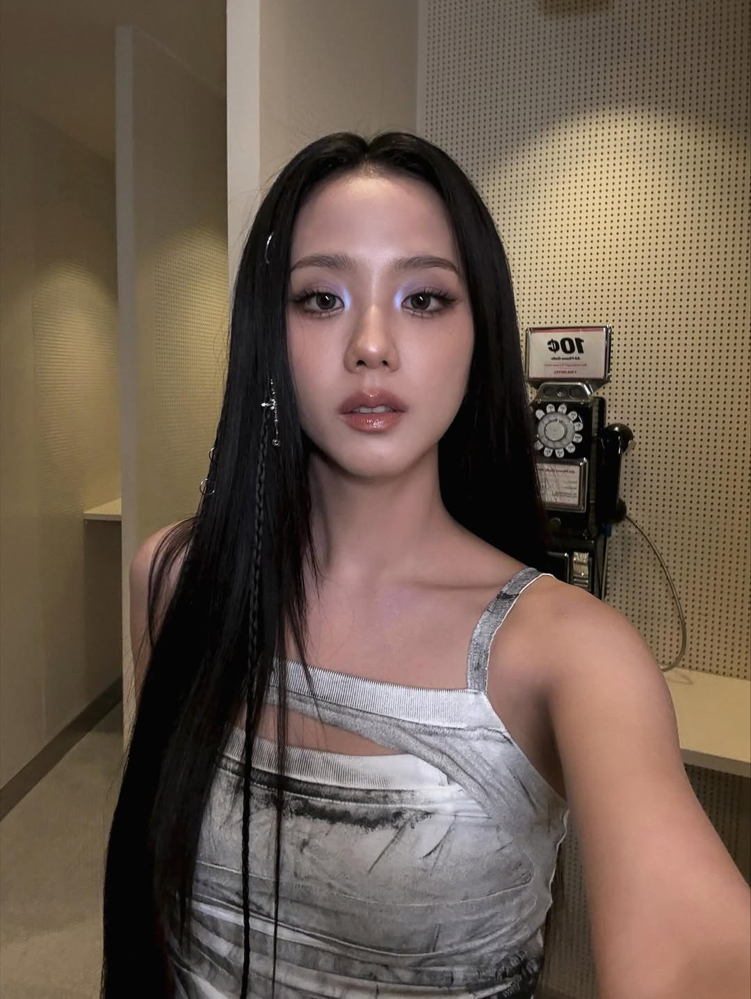
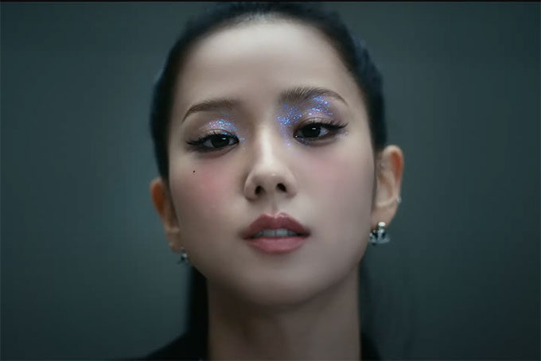

Creating a Jisoo "Eyes Closed" inspired makeup look using Javin De Seoul products — from brand brief to final Instagram Reel. Full creative direction, set build, palette study, and production.

REF · 02
REF · 03Before locking the shoot, I pitched three concepts. Each had a distinct set, palette, and emotional register — Red silver-plated flatware, a chessboard editorial, and Sparkle in outer space. The brand selected the red flatware option for its production value and cinematic palette.
Before filming began, I created a full hand-drawn storyboard for both the intro and the product showcase. During the planning stage, I also realised that some of the AD-assisted transitions would not reach the quality I wanted without additional equipment, so the storyboard was refined shot-by-shot to keep the execution realistic and visually strong.
After finalising the chessboard concept, the production setup was built from scratch. I sourced the props, painted miniature cubes to match the palette, found fabric, lots, fans for the table cover, then ironed, cut, and arranged every material to fit the composition planned in the storyboard.
This was the stage that turned the project from a single-phone video into something more intentional. Every detail in the frame — from the fabric placement to the positioning of the cubes and products, was planned before filming began.
Rather than filming all three JVDS products in the same set, I gave each one a distinct visual treatment. Each scene had its own mood, lighting, and styling logic. The decision came from a simple observation: products felt more special when they sat not competing with each other for attention in one frame.
The red palette area was a callback line from the MV. Pieces of red sit close around the centre, the lighting is single-source, and the highlight is the only motion in the frame. The cushion disappears into the set, and only its top opens once.
The shadow palette FW07 logic flipped: black-and-white tiles painted on a wood-floor base, then aged. With one product set into the centre tile, the chessboard pattern reads as the brand's signature texture.
A blue-felt-lined surface and a single brass-shape mirror lit from one direction. The product lives in the reflection more than in the hand-held shot. The reflection gives the lip a glow without lighting it directly.
With the palette and makeup direction confirmed, I moved to concepting the video's visual themes. Three directions were developed from interest and a video by using the brief, each had to make the products feel intentional and cinematic while keeping them as the clear focus of the frame.
The brief from Javin De Seoul was to recreate Jisoo's look from the "Eyes Closed" music video using their products. Before getting into anything, I watched the video all the way through and used a colour picker to pull the main tones from the visuals. The palette came out as deep reds, near blacks, and soft silvers.
These three colours guided everything that came after, from the set and styling to the lighting and how the products were placed. Starting from the palette instead of a general mood helped keep the visuals aligned with the original, while still feeling like my own take on it.
Once the palette was locked, I moved to the makeup reference selection. Jisoo has dramatic and dark contoured eyes, and I tried borrowing from a specific look from careful research. I focused on her eye makeup look and how it was executed by @jonna's makeup from the Portuguese MV period onwards. Each reference was evaluated against two criteria: whether it most closely on-camera read range, and whether it could be executed in a single take by Jisoo. I added two cool product brown eyeshadow to my own kit before booking the date.
Makeup applied following the selected reference look. Filming followed the storyboard, with real-time adjustments made to lighting and what the camera could capture cleanly at that scale. Delivered in two formats.